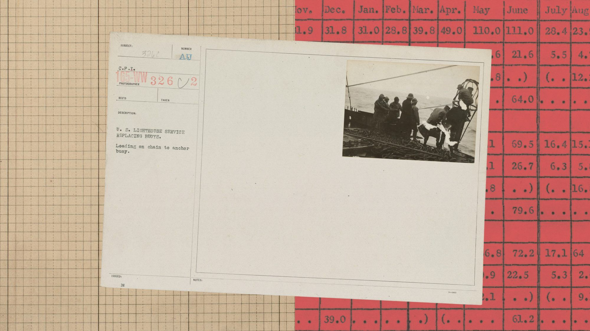

科技產品 T1

官方主題示意圖，非 OSS Scanner 操作介面或事件照片。 Anthropic
Anthropic 推出免費 OSS Scanner，讓開源專案主動申請定期漏洞掃描
發佈時間
Anthropic／OSS Scanner
開源維護者可選擇加入免費掃描服務，取得漏洞說明、利用概念驗證與可提供的修補建議。
- 報告由模型產生，傳送前未經人工審查，適合有能力處理大量發現的團隊。
- 官方預期真陽性率超過九成，這是廠商預期，不是本站驗證結果；服務採主動加入，不代表所有開源專案已被納入。
完整報告收合報告
事件背景與影響
漏洞發現成本下降不等於修補完成；新服務把發現能力交給維護者，但也把驗證與排序工作帶進原本就人力有限的專案。
事件與發佈依據
官方 Cyber Mission 公告首次發布 metadata 為 2026-10-08T09:04:16.632Z；採首次發布，不採修改時間。
收錄紀錄
9/26–10/9 日報以 Anthropic、OSS Scanner、Cyber Mission 窄查無命中；同窗產品表亦無此服務推出事件。
尚待確認
嚴重程度與修補建議可能出錯；免費不等於維護成本為零，也不保證找出所有漏洞。
相關實體與概念
Anthropic、Claude、OSS Scanner、開源維護、漏洞揭露、人工驗證
科技產品 T2
OpenAI 支援文件介面示例，非本站實機測試。 OpenAI
OpenAI 開放 Codex 訊息預測測試，先向成年個人 Pro 用戶提供下一則指令建議
發佈時間
OpenAI／Codex Composer predictions
Codex 回覆後可在輸入框建議下一則訊息，使用者接受、編輯並自行送出，不會自動延續工作。
- 測試限18歲以上個人 Pro、最新桌面版的 local／SSH threads，支援 GPT-6 Astra 與 GPT-6.1 Sol。
- 測試期間生成預測不計 Codex 額度或 credits；真正送出的訊息仍按一般規則計費與計量。可在設定關閉。
完整報告收合報告
事件背景與影響
減少重複輸入可能改善長任務操作，但預測不代表使用者意圖，也不能當作排程失敗時的自動恢復機制。
事件與發佈依據
ChatGPT release notes 的 October 9, 2026「Composer predictions in Codex」段落；沒有可核實獨立時分，不補午夜時間。
收錄紀錄
最近14日日報查 Codex 與 Composer predictions／預測／建議訊息無命中；與10/9已收錄的執行中跟進指令加速是不同功能。
尚待確認
不是每次回覆都會出現建議；不能推論其他方案、網頁 Chat 或手機已支援，也不會自動接受或送出建議。
相關實體與概念
OpenAI、Codex、Pro、訊息預測、使用者確認、用量
科技產品 T3
Google Health 預告十月十二日揭曉健康裝置，使用「Edge」字樣但尚未公布完整規格
發佈時間
Google／Fitbit Edge 發布預告
Google Health 公開「Get an Edge on your health. 10.12.26」與局部裝置影像，讓新健康穿戴裝置有了具體揭曉時程。
- 預告日期為10/12，並非已經上市或開始出貨。
- 「Fitbit Edge」為媒體依官方 Edge 字樣及先前線索使用的名稱；價格、電池與功能細節仍待正式公告。
完整報告收合報告
事件背景與影響
官方預告比流出圖片更能確認發布方向，但距離產品正式發表仍有一步，現在不適合把傳聞規格當成購買依據。
事件與發佈依據
Google Health 10/9 官方社群預告；可精確定位的 Engadget 首次報導為 2026-10-09T22:28:43Z。
收錄紀錄
最近14日日報查 Fitbit.*Edge、Edge.*Fitbit 無命中；同窗表無此次發布日期預告。
尚待確認
不採未證實的歐洲售價、七天續航或健康感測器說法；不以 Charge 6 舊照片冒充新機。
相關實體與概念
Google Health、Fitbit、Edge、穿戴裝置、產品預告
全球焦點 1
Navi Pillay 獲諾貝爾和平獎，委員會肯定其推動和平與國際法
發佈時間
前聯合國人權高專 Navi Pillay 獲2026年和平獎，國際司法在政治壓力下再成焦點。
- 委員會肯定其推動和平與國際法的工作。
- 她曾任國際刑事法院法官及聯合國人權高專。
完整報告收合報告
事件背景與影響
獎項提高國際法與受害者權利的能見度；象徵性肯定與法院實際執行能力仍是兩回事。
事件與發佈依據
挪威諾貝爾委員會公告 metadata 2026-10-09T11:00:00+02:00；不使用 AP 滾動頁揭曉前建立時間。
收錄紀錄
最近14日日報查 Navi Pillay／皮萊無此得獎事件。
尚待確認
以色列反對她領導之調查委員會的加薩結論；該結論與法院終局判決不能混為一談。
相關實體與概念
Navi Pillay、諾貝爾和平獎、國際法、聯合國
全球焦點 2
續報｜美國將制裁擴大至國際刑事法院機構本身
發佈時間
美國把對 ICC 的施壓從個人層級推向整個法院，交易與服務供應面臨新限制。
- 國務卿 Rubio 宣布新措施。
- AP 報導限制涉及金融及科技服務等交易。
完整報告收合報告
事件背景與影響
制度能否維持運作取決於資金、供應商與合作網絡；制裁可能讓司法程序的實際成本增加。
事件與發佈依據
AP 首次發布 2026-10-09T14:33:42Z，報導美國當日機構層級制裁。
收錄紀錄
9/26收錄機構制裁風險、9/29收錄德國聲援；今日新增美方正式宣布措施，不再只是警告。
尚待確認
美方指法院越權，支持者重視司法獨立；實際供應中斷與法律豁免須看執行，不預設法院已停止工作。
相關實體與概念
美國、ICC、Marco Rubio、制裁、國際司法
全球焦點 3
川普稱與普丁達成柴油供應安排，俄方交付與制裁執行仍待確認
發佈時間
川普表示與普丁通話後，俄羅斯將立即提供30萬噸柴油，但聲明不是貨物已抵達的證據。
- 川普宣稱首批為30萬噸，並提出後續擴大量的計畫。
- 這是美方政治聲明階段，尚非本站核實的交貨紀錄。
完整報告收合報告
事件背景與影響
燃料價格壓力正影響外交與能源政策；若實施，市場仍須評估供應速度與制裁安排。
事件與發佈依據
AP 首次發布 2026-10-09T18:57:40Z，報導川普當日通話與交易聲明。
收錄紀錄
最近14日日報的G7釋儲是不同事件；未見本次美俄柴油安排。
尚待確認
付款、航運、俄方落實與法律執行細節未完全確認；不把預定供應當成可用庫存。
相關實體與概念
Donald Trump、Vladimir Putin、柴油、能源安全、制裁
全球焦點 4
歐盟與中國達成初步貿易安排，混合動力車出口與市場准入成焦點
發佈時間
雙方公布談判進展，歐方描述安排可能減少中國混合動力車出口，並改善歐企市場准入。
- 歐方稱中國混合動力車出口可能減半。
- 中方確認進展，但沒有同步確認全部量化細節。
完整報告收合報告
事件背景與影響
汽車與關鍵原料牽動供應鏈；但談判框架、正式文本與實際通關效果需要分開看。
事件與發佈依據
AP 首次發布 2026-10-09T07:48:41Z；Reuters 同日報導初步協議內容。
收錄紀錄
最近14日日報未見本次初步安排；不把先前一般貿易摩擦當相同協議。
尚待確認
「減半」保留為歐方描述，不寫成雙方已公布的共同數字；落實條件仍需正式文本。
相關實體與概念
歐盟、中國、Maros Sefcovic、混合動力車、稀土、市場准入
全球焦點 5
續報｜Isaias 升為三級颶風，美國墨西哥灣沿岸面臨重大風暴威脅
發佈時間
Isaias 增強為三級，阿拉巴馬與佛羅里達沿岸須因應更高的風雨及風暴潮風險。
- 三級屬重大颶風。
- 報導預測週五晚間登陸；本項不宣稱截點前已登陸。
完整報告收合報告
事件背景與影響
風力級別不是單一安全指標，沿岸淹水、降雨與撤離路線同樣決定災害後果。
事件與發佈依據
AP 首次發布 2026-10-09T13:33:19Z，更新為三級颶風。
收錄紀錄
10/9收錄二級與撤離準備；新增三級重大颶風強度與週五晚間預測登陸風險。
尚待確認
路徑與強度仍會變動；請以當地官方警報為準，不以本日報代替即時防災指令。
相關實體與概念
Isaias、三級颶風、墨西哥灣、風暴潮、撤離
全球焦點 6
續報｜俄羅斯新一輪攻擊造成烏克蘭至少三死，多地住宅受損
發佈時間
烏方官員通報 Zaporizhzhia、Ivano-Frankivsk 與 Bucha 等地的新攻擊，至少三人死亡。
- 官員通報至少三死、八傷。
- 數字屬當時初步通報，不加入前一日巴士罹難者。
完整報告收合報告
事件背景與影響
連續攻擊讓城市防空與民生修復同時承壓；需要按事件與地點分開記錄，避免重複累計。
事件與發佈依據
AP 首次發布 2026-10-09T09:24:20Z，彙整週五地方官員通報。
收錄紀錄
10/9日報收錄前一日巴士攻擊；今日為另一輪攻擊及不同地點傷亡，並非重刊巴士數字。
尚待確認
地方傷亡與目標性質尚無法逐項獨立核實，後續可能修正。
相關實體與概念
烏克蘭、俄羅斯、Zaporizhzhia、Bucha、平民保護
全球焦點 7
馬來西亞提出2027年預算，燃料壓力影響財政赤字規畫
發佈時間
政府提出總額4,598億令吉的2027預算，約1,125億美元，同時面對燃料支出壓力。
- Reuters 報導2026赤字目標由 GDP 的3.5%修正為3.6%。
- 美元換算是報導時估值，主要預算單位為令吉。
完整報告收合報告
事件背景與影響
預算透露政府如何取捨民生支援與財政整頓，但提出方案並不等於國會已通過。
事件與發佈依據
Bernama highlights metadata「09/10/2026 08:00 PM」；國會當日提出預算，屬窗口內新政策程序。
收錄紀錄
最近14日日報查馬來西亞／Malaysia與預算／budget，無此2027預算命中。
尚待確認
方案仍須立法程序；選舉時機為政治背景，不是已確定選舉日期。
相關實體與概念
馬來西亞、Anwar Ibrahim、2027預算、財政赤字、燃料
全球焦點 8
智利首都豪雨引發土石流與道路混亂，至少六人受傷
發佈時間
Santiago 豪雨造成土石流及車輛受困，至少六人受傷，都市排水與坡地安全受到考驗。
- AP 報導受傷及道路、車輛受衝擊。
- 災害發生於當地週四，本日採窗口內首次可靠報導，不聲稱全部在台灣10/9發生。
完整報告收合報告
事件背景與影響
短時強降雨可以迅速打斷城市交通，災後除清理道路也須檢查坡地與排水設施。
事件與發佈依據
AP 首次可靠報導 2026-10-09T03:25:13Z；描述當地週四豪雨後災情，以本次首報入窗，不將累積雨量當新增單日值。
收錄紀錄
最近14日日報查智利洪災／Chile flood 無本次事件。
尚待確認
初步受傷人數不代表最終災損；沒有據此判定單一災害的氣候歸因。
相關實體與概念
智利、Santiago、Las Condes、豪雨、土石流、都市韌性
全球焦點 9
續報｜FBI 宣布逮捕與徵才網站外洩案相關的另一名 ShinyHunters 涉嫌共犯
發佈時間
FBI 宣布與徵才入口遭入侵事件有關的新逮捕，案件涉及第三方管理平台。
- 局長 Kash Patel 說調查持續。
- 對方為涉嫌共犯，仍須司法程序，不預先認定有罪。
完整報告收合報告
事件背景與影響
關鍵機構使用的外部系統同樣需要更新與存取管理；逮捕是調查進展，不代表資料風險已消失。
事件與發佈依據
AP 首次發布 2026-10-09T15:36:50Z，FBI局長當日宣布逮捕進展。
收錄紀錄
10/4收錄匿名來源指 Jordan 拘留涉案人物；今日新增 FBI 官方宣布另一涉嫌共犯被捕，不把兩人直接認定為同一人。
尚待確認
被捕者角色、完整外洩範圍與後續起訴仍待公開文件，不照單全收駭客所稱規模。
相關實體與概念
FBI、ShinyHunters、第三方供應商、個資、刑事調查
全球焦點 10
NASA 正式徵求商業太空站提案，預定十二月收件、明春授約
發佈時間
NASA 對國際太空站退役後的低軌服務提出正式採購程序，要求企業提供目的地與交通整合方案。
- 提案截止12/8，預計2027年春季授約。
- 規畫多家固定價格、IDIQ合約，早期開發選兩家以上，再競爭後續設計、認證與服務。
完整報告收合報告
事件背景與影響
從政策願景進入徵案，企業必須交出技術與商業可行性，政府則需要降低過渡期間服務中斷風險。
事件與發佈依據
NASA 首次發布 metadata 2026-10-09T18:11:44Z；當日發布最終 Request for Proposals。
收錄紀錄
最近14日日報未見這次最終徵案；與Crew-12返航、早前徵詢或草案不同。
尚待確認
尚未決定得標者或證明太空站已可營運；授約時程是預期，不是保證。
相關實體與概念
NASA、低地球軌道、商業太空站、RFP、IDIQ、ISS
研究備註
時間、來源與後續追蹤
研究截點 2026-10-10 08:01:42（Asia/Taipei）
研究時間與範圍
研究截點：2026-10-10 08:01:42（Asia/Taipei）。全球新聞：2026-10-09 08:01:42 至 2026-10-10 08:01:42（Asia/Taipei）。科技產品：2026-09-26 08:01:42 至 2026-10-10 08:01:42（Asia/Taipei）。